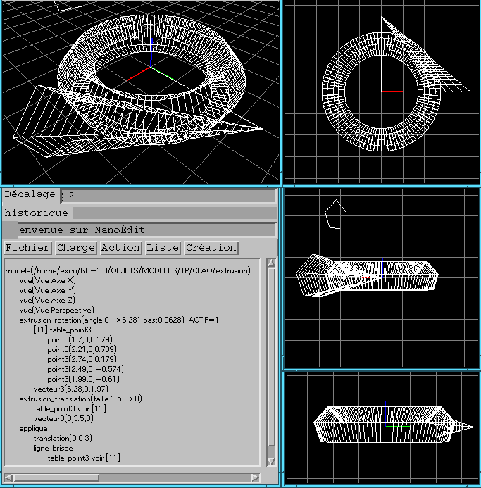

Affichage d'une extrusion par rotation ou translation
L'extrusion d'une forme suivant une trajectoire
est composée par l'ensemble des points
sur lesquels est passé la forme en parcourant
la trajectoire.
En se limitant à une forme filaire,
l'extrusion permet d'obtenir une surface.
Pour visualiser la surface, on peut afficher
des isoparamétriques.
L'un des paramètres est la position sur le contour
et l'autre la ``position'' sur la trajectoire.
Les deux types d'extrusions les plus utilisées
sont l'extrusion par translations et
l'extrusion par rotation.
En effet, elles correspondent à des procédés de
fabrication physique.
Exemples :
| Contour | Extrusion par rotation | Extrusion par translation perpendiculaire au contour
|
|---|
| Carré | Axe=un des cotés du carré
Cylindre | Cube
|
| Cercle | Axe=un diamètre du cercle
Sphère | Cylindre
|
| Cercle | Axe=dans le plan du cercle
Tore | Cylindre
|
| Triangle | Axe=une bissectrice
Cone | Prisme triangulaire
|
L'image suivante montre l'extrusion par translation et rotation
d'une ligne brisée
formée de 5 points .
Il n'y a pas superposition des lignes brisées de départ
car il y a un dilatation égale à 1.5 du contour
au départ de la translation (et de 0 à la fin).
L'extrusion par translation ``part en biais'' car
le contour n'est pas centré sur l'origine.
Le vecteur de la translation est l'axe des Y et
celui de rotation l'axe des Z.

Extrusion par translation
Recopiez le
squelette de o_ex_translation.c
dans le répertoire Nanoedit.
Pour ce faire, vous pouvez exécuter la commande :
cp /home/exco/NanoEdit/TP/C/o_ex_translation.c $HOME/NanoEdit
Il ne vous qu'à faire l'affichage des iso-paramétriques
de la surface extrudée.
Extrusion par rotation
Recopiez le
squelette de o_ex_rotation.c
dans le répertoire Nanoedit.
Pour ce faire, vous pouvez exécuter la commande :
cp /home/exco/NanoEdit/TP/C/o_ex_rotation.c $HOME/NanoEdit
Il ne vous qu'à faire l'affichage des iso-paramétriques
de la surface extrudée.
Extrusion par translation/rotation
Si ce sujet de TP vous a semblé trop simple,
alors ajouter un paramètre de rotation
à l'extrusion par translation.
Cela vous permettra par exemple de faire
un pas de vis.
Thierry EXCOFFIER
Last modified: Wed Jan 6 12:33:35 CET 1999